Estabilidade entre lotes
Cada lote sai com a mesma qualidade do anterior: cor, cura e fixação previsíveis. Sem surpresas na hora de produzir, sem retrabalho, sem cliente esperando por causa de insumo que "veio diferente".
DTF Têxtil · DTF UV · Máquinas · Insumos · Suporte
Máquinas DTF de padrão alemão, insumos com a mesma qualidade de lote a lote e suporte técnico que fica do seu lado depois da compra. Tudo com um único parceiro, em todo o Brasil.
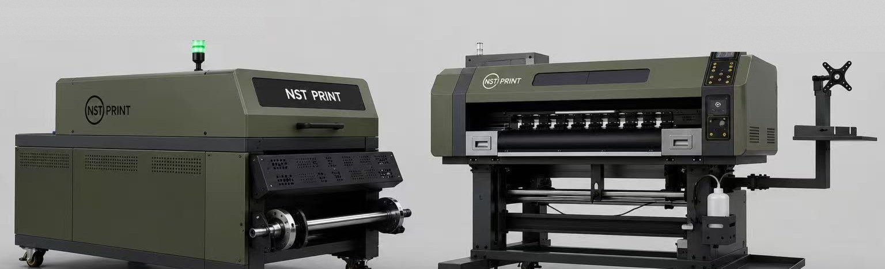
Por que a NST Print
Cada lote sai com a mesma qualidade do anterior: cor, cura e fixação previsíveis. Sem surpresas na hora de produzir, sem retrabalho, sem cliente esperando por causa de insumo que "veio diferente".
Quem compra com a NST Print não fica sozinho depois do pedido: nossa equipe técnica acompanha você para manter a máquina sempre em produção.
Cabeçotes Epson de alta precisão, tintas de alta pigmentação, filme PET de liberação uniforme e TPU premium. Cada elo da cadeia responde pelo resultado final.
Máquina, tinta, filme e pó adesivo com um único parceiro. Menos fornecedores para gerenciar, mais consistência em todo o seu processo.
Clientes atendidos em diversas regiões do Brasil, com logística e reposição de insumos para manter sua operação abastecida.
Linha de máquinas
Quatro configurações, um mesmo padrão de engenharia: cabeçotes Epson de alta precisão, forno com esteira automática, aproveitamento automático de TPU e estrutura robusta sobre rodízios.
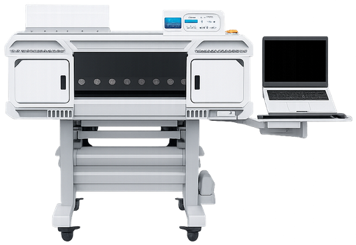

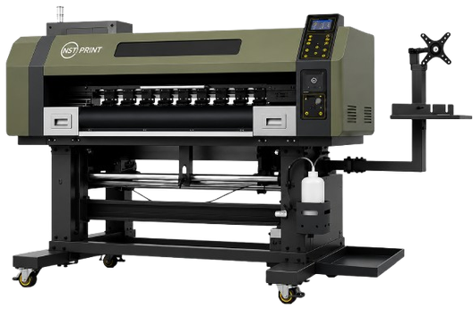
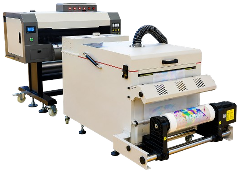
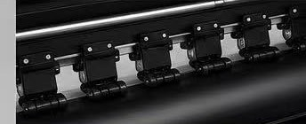
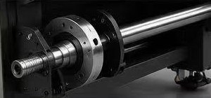
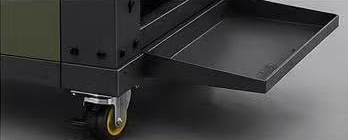
Em dúvida sobre qual configuração faz sentido para o seu volume?
Conversar sobre máquinasLinha de insumos
Tinta, filme e pó desenvolvidos para trabalhar juntos — e para chegar na sua produção com a mesma qualidade em cada reposição.
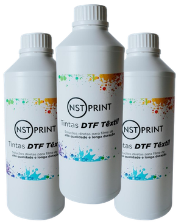
Alta pigmentação e cores vivas, secagem eficiente, fixação superior no filme e no tecido, resistência às lavagens.
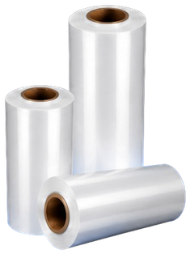
Alta transparência e estabilidade térmica, ótima absorção de tinta e pó, liberação uniforme e fácil sem danificar a estampa. Larguras de 30 cm e 60 cm.
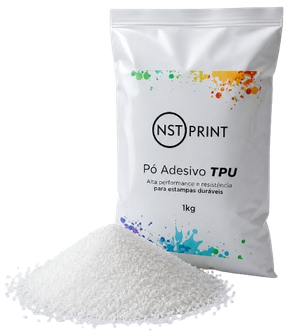
Alta aderência e cura uniforme, com flexibilidade têxtil de verdade e excelente resistência às lavagens.
Linha adicional para quem trabalha com aplicações em superfícies rígidas: consulte disponibilidade de insumos e equipamentos UV com um especialista.
Reposição programada ou primeiro pedido — fale direto com quem entende do insumo.
Pedir orçamento de insumosSimulação de investimento
Informe o seu volume de produção e veja a capacidade, a receita potencial e o tempo estimado de retorno — com os números reais da sua simulação, calculados aqui no seu navegador.
Selecione o modelo que você está avaliando. Se não souber qual escolher, use o assistente abaixo.
Selecione uma máquina para continuar.
Esses números vêm só do seu planejamento — não temos preços fixos, então use a sua estimativa real de produção e venda.
Preencha só se hoje você paga terceiros para imprimir — usamos isso para comparar no gráfico do resultado.
Não foi possível calcular agora. Verifique sua conexão e tente novamente.
🔒 Os dados que você digitou são enviados só ao nosso servidor para calcular o resultado na hora — nada fica armazenado.
Como funciona
Sem formulário, sem espera: a conversa começa direto com a nossa equipe.
Volume de produção, tipo de estampa, espaço disponível e planos de crescimento — uma conversa consultiva, não um roteiro de venda.
Você recebe uma proposta montada para a sua necessidade: máquina, insumos ou a solução completa.
Depois da entrega, o relacionamento continua: suporte técnico e reposição de insumos para manter a produção em dia.
Bastidores & clientes
Por trás de cada máquina entregue existe uma equipe técnica que conhece o equipamento por dentro — e clientes que produzem com ele todos os dias.
Suporte & parceria
No DTF, máquina parada é pedido atrasado e cliente perdido. Por isso, na NST Print, o pós-venda não é um setor distante: é uma cultura de relacionamento com quem produz com a gente.
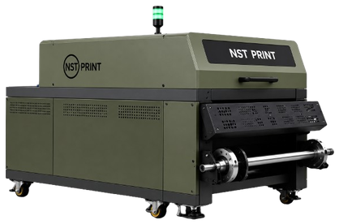
Próximo passo
Atendimento consultivo, um pedido de cada vez. Sem preço de tabela, sem formulário: a proposta é montada para a sua operação.
Chamar no WhatsApp+55 47 99919-3256